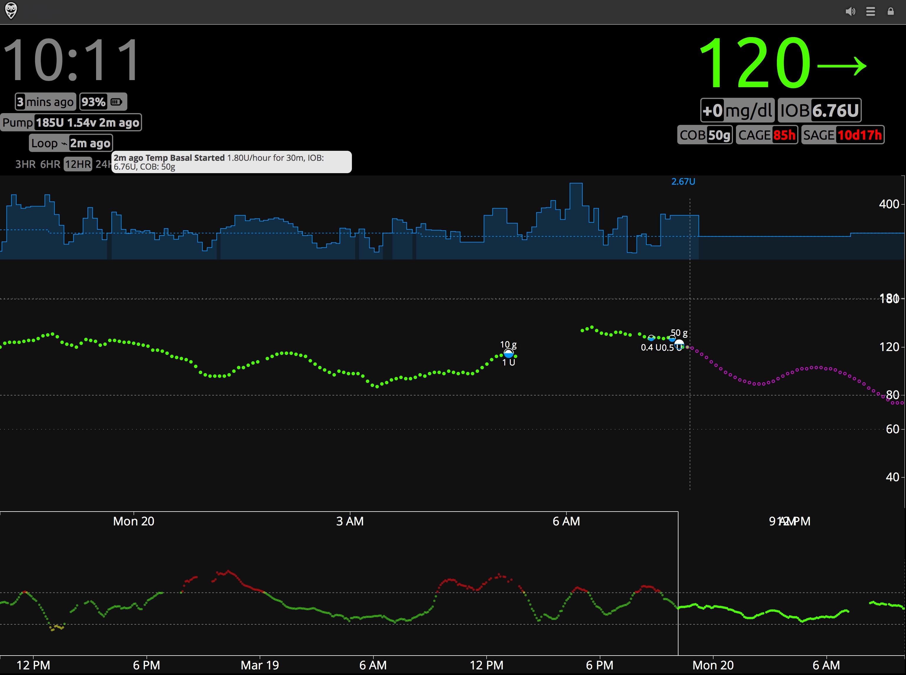
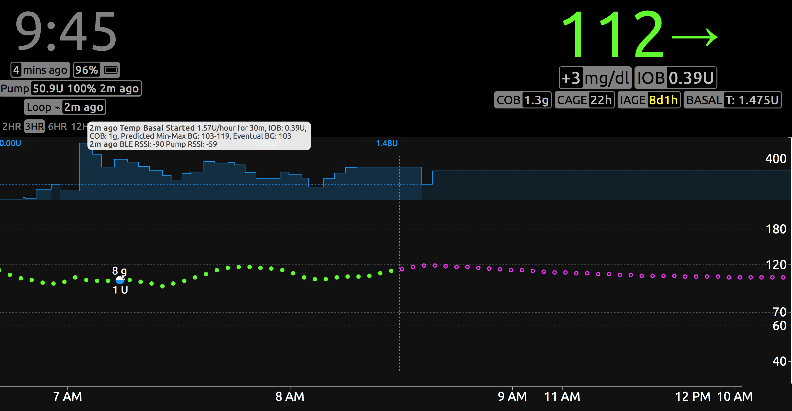

Overview⌁
Nightscout (NS) is an excellent tool for remotely viewing Loop's actions. It allows for easy remote monitoring of Loop activities, troubleshooting of Loop errors, history of CGM, carbs, boluses, & temp basals, reports analyzing data trends and patterns. There is a Nightscout app in your iPhone App Store, or you can use a web browser to view the data. Setting up Nightscout is free and fairly quick. Once set up, the site can be accessed by anyone that you share your unique Nightscout URL with.
Nightscout is highly recommended for Loop users, especially those using Loop as caregivers to t1ds. Nightscout displays are often the easiest way to troubleshoot Loop settings, if you are having problems and seeking input from others. Below is some discussion about the general Nightscout display, as well as some Loop-specific display information.

- Blood Glucose ⌁
- Your blood glucose (BG) readings from your CGM are shown in green, yellow, or red in the main graph area of NS. You can adjust your high and low BG targets in NS (when NS alerts will start for high/low BGs), but those will not affect your Loop performance. Loop only uses the BG targets given in the Loop app settings. The main screen of BGs is displaying the time duration you have selected (in the example above, 12 hours of BG history). The bottom of the screen shows the last 48-hours of BG trends. You can scan backward by dragging the bottom timeline to the left, if you want to review specific Loop actions or data in the last two days.
- SAGE, CAGE, BAGE pills ⌁
- The SAGE, CAGE, and BAGE pills are for Sensor Age, Cannula Age, and (pump) Battery Age. These optional pills track the time since your CGM sensor, Pump site, and Pump battery were last changed. You can set up custom alerts to remind you when it is time to change the devices, or simply use the visuals to keep track of your particular timing for site/sensor changes. These fields will not auto-update from pump or CGM devices, instead you will have to update them using Nightscout Careportal so that the pill information is accurate.
- Carbs ⌁
- Carbs are automatically uploaded to NS by the Loop app. The amount of carbs on board (active carbs or COB) can be seen by clicking the Loop pill. The size of a white carb dot on the graph is proportional to the amount of carbs entered...bigger meals get bigger dots. Loop does not read carbs from NS for use in looping calculations, it only uploads carbs to NS that have been entered in the Loop app.
- Boluses ⌁
- Insulin boluses are also automatically uploaded to NS by the Loop app. The bolus is shown as a filled-in blue lower-half of the dot, and the specific amount of the bolus is also shown. There may be a slight delay between when the carbs for a meal are uploaded to NS to when the meal bolus appears. This is because depending on the pump model and size of bolus, the bolus may take a few minutes to actually be administered then Loop has to perform a pump read to verify the reservoir volume has decreased (i.e., the bolus was given). As shown in the example above, the meal carbs have been uploaded, but the bolus delivery is still in progress. Insulin on board (active insulin or IOB) is also shown in the Loop pill.
- Temp Basals ⌁
- Within your NS profile, you will enter in the scheduled basal for your Loop user. This is not automatically updated when you update the Loop app or your pump; you will have to manually update your basal profile in your NS site if you change your basal profile in Loop and/or pump. (Note: The dev branch does now update NS with the basal schedule from Loop, but dev is considered generally less stable than the master branch). If you don't update the NS basal profile, it doesn't cause any problems in Loop function...you simply won't have accurate VISUAL representation of high/low temp basals within NS. The dashed blue line represents the scheduled basal profile (as entered in your NS profile). The solid blue lines indicate the actual basal amounts set for a given time...so as Loop sets temp basals higher or lower than your scheduled basal rate, the solid blue line will jump above or below your dashed blue line. There is a slight delay (up to 2-5 minutes) in the rendering of basal changes on the blue lines, so if you want the accurate current basal rate, you can check the Loop pill.
- Predicted BG ⌁
- The purple line to the right of the BG is Loop's predicted BG. Watching the behavior of that purple line can help you understand why Loop is making decisions regarding high or low temps. You can read more on that topic in the Algorithm section of these docs.
- Loop pill ⌁
- The Loop pill is the little display box which when hovered over, or clicked, will provide additional information about recent Loop activities and status. Information included is the last time Loop ran, the temp basal set, IOB, and COB. Looking at the Loop pill is a quick method for assessing if you loop is currently active, as well.
Loop Pill status indicator symbols
X Error in Loop
ϕ Recommending basal, but not enacting (open loop or pump suspended)
⌁ Enacted a new temp basal
↻ Loop is continuing with last temp basal, no change
⚠ Warning indicating Loop is either red or has failed to upload to Nightscout for a longer period of time.
Mouseover or Touch the Loop pill to view a tool tip containing one or more of the latest status messages. The most up-to-date NS also includes information in the Loop pill for the minimum and maximum predicted BG, eventual and predicted BG.
